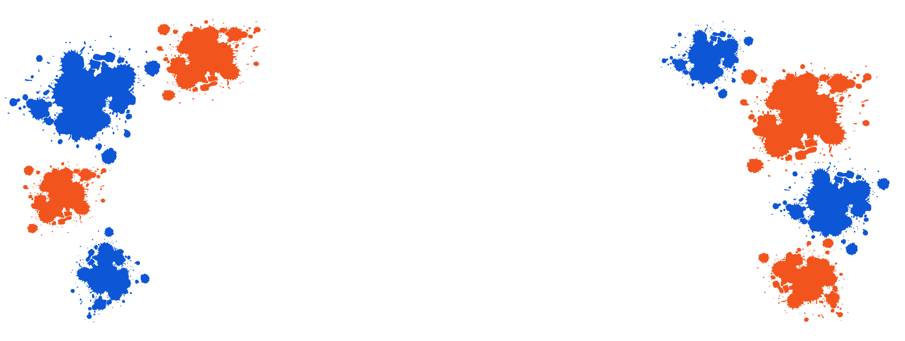

- At begynde på uddannelsen som multimediedesigner er en spændende rejse fyldt med læring,
kreativitet og udfordringer. Som ny studerende på 1. semester har jeg oplevet en stejl læringskurve,
men også en utrolig udvikling både fagligt og personligt.

ELOFMARK.DK
Portfolio af Emilie Løfmark
Intro til Portfolio
- En af de mest spændende aspekter ved uddannelsen er kombinationen af kreativitet
og teknologi. Fra dag ét blev vi introduceret til en bred vifte af værktøjer og teknologier,
herunder Adobe, HTML, CSS og JavaScript.
Disse værktøjer giver os mulighed for at bringe vores kreative ideer til live gennem design og
interaktive løsninger
- Projekter er en stor del af undervisningen, og de udfordrer os til at anvende de
færdigheder,
vi lærer, i praksis. Vi har arbejdet i grupper i det sidste tema, hvilket fremmer samarbejde og
kommunikation. At arbejde på projekter med mine medstuderende har ikke kun været lærerigt,
men også sjovt og givende.
- Et vigtigt område, vi fokuserer på, er designprincipper og brugeroplevelse (UX).
Vi lærer, hvordan man skaber æstetisk tiltalende og brugervenlige designs, der engagerer brugerne.
Dette indebærer alt fra farveteori og typografi til brugertests.
Og lad os ikke glemme gestaltlovene
- Udover den faglige læring har mit første semester også været en tid med nye
venskaber og sociale oplevelser. Desuden har jeg oplevet personlig vækst gennem
de udfordringer, vi møder – både i og uden for klasseværelset.